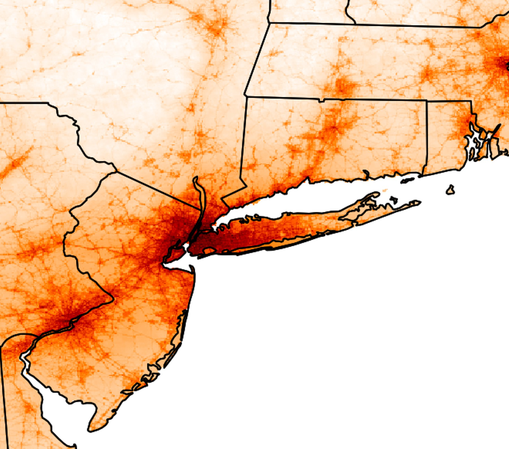

How are we affecting our atmosphere, and how can we take action to protect air quality, our climate and health for everyone?
These are the two questions that are a common thread in the research that my group and I do.
We apply high performance computing, remote sensing data analysis, and public health impact assessment methods for cities and countries around the world.
Hi! I’m Omar Nawaz, PhD, FHEA. I am a Lecturer in Climate Change Science and a research group leader at Cardiff University.

Surface-level nitrogen dioxide concentrations around New York, estimated from satellite observations. Darker colours indicate higher concentrations.
Read the paperWhere has our research taken us?
From Cardiff, our research and collaborations extend to cities and countries across the world.
Select a location to read about our work there.
Cardiff, Wales
Our group is based in the School of Physical, Chemical and Environmental Sciences at Cardiff University in Cardiff, Wales, UK.
Port Talbot, Wales
Omar spoke to BBC News about how air pollution in Port Talbot has changed since traditional steelmaking ended there.
Thailand
Omar is a technical panel member for the Comprehensive Assessment of Co-Benefits and Maladaptation of Solarisation in Thailand (CAST Solar) projected supported by the Wellcome Trust and Thailand Science Research and Innovation.
Shipping
Omar contributed to a policy brief by the International Council on Clean Transportation (ICCT) on the health and air pollution benefits of a global 0.1% fuel sulfur limit on marine fuels.
London, England
Kyla Camama’s MSci dissertation project assessed the impact of London’s Ultra Low Emission Zone on surface-level nitrogen dioxide concentrations by developing a machine learning approach for integrating remote sensing data.
York, England
At the 2025 UK Atmospheric Chemistry Conference in York, Omar presented a poster on what low-earth-orbit, geostationary and airborne remote sensing can reveal about surface nitrogen dioxide.
Leiden, Netherlands
In 2026, Omar gave an invited virtual talk on the added benefit of TEMPO remote sensing of nitrogen dioxide for exposure and health impact assessment for the CEOS conference in Leiden.
Europe
With collaborators, we quantified the sources of health risks associated with fine particulate matter in Europe, and how air pollution has changed in Europe between 2005 and 2015.
Vienna, Austria
Omar regularly convenes a session on air quality, climate, health and equity at the European Geosciences Union General Assembly in Vienna and has attended and presented there since 2024.
Riyadh, Saudi Arabia
Mohammed Alsuwayh’s MSc project examined how rising temperatures are affecting drought risk in Riyadh, and whether current drought governance is equipped to respond.
South Korea
With collaborators, we attributed the health burdens of fine particulate matter, ozone and nitrogen dioxide in South Korea to their sources, to assess national emission control scenarios for 2050.
Eastern Canada
With collaborators, we used the first year of TEMPO observations to characterise tropospheric nitrogen dioxide patterns over eastern Canada.
Washington, DC
We quantified the contributions of sectoral, regional and species-specific emissions to air pollution and its health impacts in Washington, DC.
United States
We developed a surface-level nitrogen dioxide exposure dataset for the continental United States using TROPOMI satellite observations.
Houston, Texas
We compared satellite, airborne and ground-level observations of nitrogen dioxide with model simulations over Houston during the September 2021 TRACER-AQ campaign.
New Orleans, Louisiana
At the 2025 American Geophysical Union meeting in New Orleans, Omar gave an invited talk on applying machine learning and statistical modelling to remote sensing observations to infer surface-level nitrogen dioxide.
Los Angeles, California
With collaborators, we used satellite observations during the COVID-19 lockdowns to show that vehicles are an under-recognised source of urban ammonia pollution in Los Angeles.
Mexico
In collaboration with the Environmental Defense Fund and the Instituto Nacional de Salud Pública de México, we are studying the health impacts of oil and gas air pollution in Mexico.
Bogotá, Colombia
In 2023, Omar gave an invited talk in Bogotá, Colombia at a UNEP, EDF, and CCAC organised workshop on clean air solutions for Latin America and the Caribbean, on using satellite data to characterise air pollution and health in cities and countries.
The Amazon, Brazil
We estimated the premature deaths in Brazil associated with long-term exposure to fine particulate matter from Amazon fires between 2016 and 2019.
Barcelona, Spain
Omar attended the Workshop on Cities, form, environmental exposures and health impacts organised by UBD Policy.
Santiago, Chile
We identified the sources of air pollution health impacts in Santiago, and estimated the co-benefits of Chile’s carbon neutrality plans for the city.
- Our research
- Talks and events
The questions we ask
What are the unique sources of pollution in a city or country?
Air pollution in a city or country originates from many sectors, chemical species and regions, both local and transboundary. We use adjoint sensitivity modelling to attribute pollutant exposure and its health burden to each of these sources, so that the people developing policy know which matter most for health.
How can climate action benefit air quality and public health?
Sources of greenhouse gases often co-emit air pollutants and their chemical precursors, so climate mitigation can deliver co-benefits for air quality and public health. We combine GEOS-Chem adjoint sensitivities with emission projections for different climate futures to quantify the resulting changes in pollutant exposure and premature deaths, for individual cities and countries. Our recent work shows that national climate action can ameliorate, perpetuate or exacerbate international air pollution inequalities.
What does wildfire smoke do to our health?
Wildfires are a major source of fine particulate matter, and their smoke is transported far from where it is emitted. We combine atmospheric modelling, remote sensing and health impact assessment to quantify the health burden of wildfire smoke, including the premature deaths in Brazil associated with fires in the Amazon between 2016 and 2019. Wildfires are expected to become more frequent and more severe as the climate warms.
What can a satellite tell us about the air at street level?
Satellite instruments such as TROPOMI and TEMPO observe pollutants in the atmospheric column, including over regions with few surface monitors. We integrate these observations with chemical transport modelling, land-use regression and machine learning to estimate surface-level concentrations for exposure and health studies. Our estimates of surface-level nitrogen dioxide across the continental United States are freely available to download.
If you are curious about how climate and air quality policymaking can contribute to a sustainable, healthy, and equitable future, write to me.
That goes whether you are interested in collaborating, joining the group, or want guidance on environmental policymaking or air pollution exposure datasets. I am always glad to talk!
Everyone is welcome in CASA.
I am committed to maintaining an inclusive and respectful research environment within CASA and within the School of Physical, Chemical and Environmental Sciences at Cardiff University, where I serve as Equality, Diversity, Inclusion and Anti‑Racism Lead.